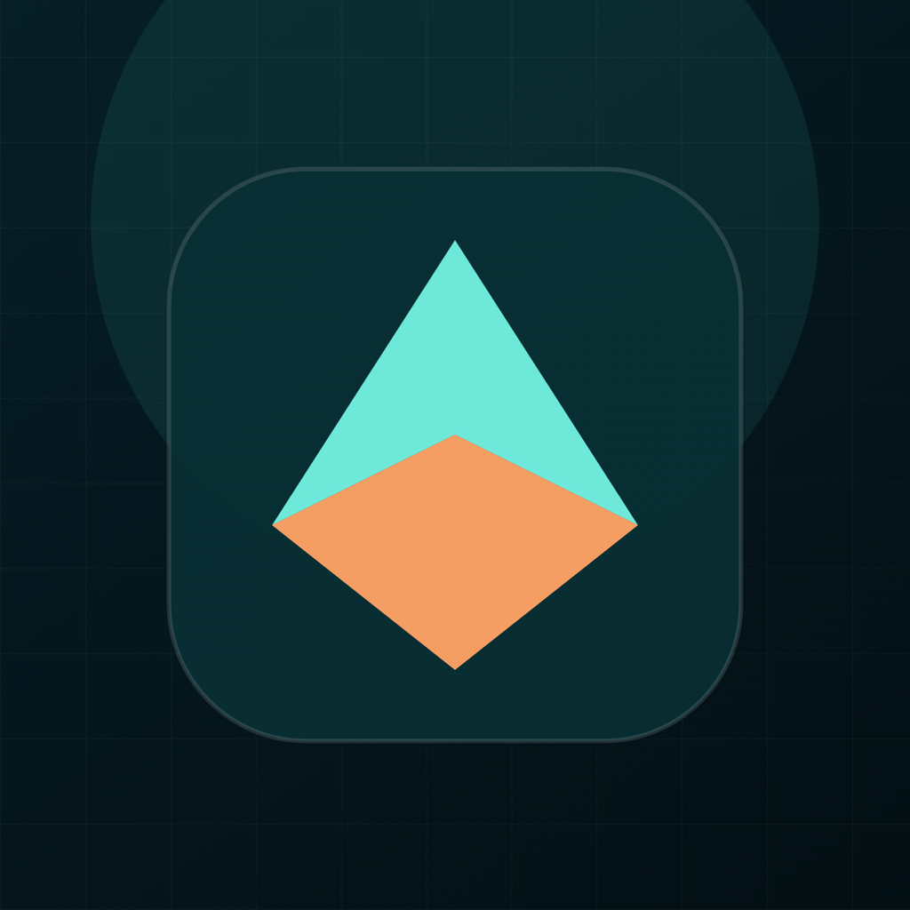
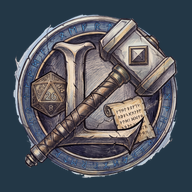

Citadel
Base, Shade, Layer, Tone Pro, Contrast, Dry, Technical, Air and Spray.

MiniatureThat armour edge you want to highlight.
That colour scheme you can’t stop thinking about.
Keep painting it, even when you’re away from your desk.
Freehand 3D painting.
On Android, iPhone and iPad.
iPad workspace
Rotate into the awkward bits. Zoom right into the detail. Put down a brushstroke.
Import an STL and prepare it on your device. Open a supported USDZ, or start with the included demo.
Move your paint controls to a comfortable spot. Close them when you want the whole canvas.
Paint with touch on Android, iPhone and iPad. Use a supported pressure-sensitive stylus on Android, or Apple Pencil on compatible iPads.
Android. iPhone. iPad.
Switch devices and explore the workspace.
Device-framed spaces for release screenshots. Select an available picture to enlarge it.
The same small decisions that make painting a miniature satisfying. A colour, a stroke, another look.
Open the painting guide ↗Import your STL, check its scale and choose a primer.
IMPORT / PREPARE / PRIMEChoose a paint or mix your own. Brush on layers, or spray the whole model in one tap.
BASECOAT / LAYER / MIXWash the recesses. Shade with contrast-style paint. Drybrush edges or broader raised surfaces.
SHADE / CONTRAST / DRYBRUSHSave your project. Return tomorrow, or export your painting and an editable backup.
SAVE / REVISIT / SHAREOn Android, iPhone and iPad, switch between Paint and Move when using touch. Android supports compatible pressure-sensitive styluses; compatible iPads support Apple Pencil. Paint with the pen and navigate with your fingers.
Two paints to experiment with here.
Up to four in the app, with your recipe saved.
ON THE SHELF
Base, Shade, Layer, Tone Pro, Contrast, Dry, Technical, Air and Spray.
Warpaints Fanatic, Speedpaint, Air, Historical and more.
Model Color, Game Color, Xpress Color, metallics, airbrush ranges and more.
Browse by brand and range. Search by paint name or code. Keep favourites, mix across brands and take the palette offline.
Main miniature ranges are included; this is not an archive of every manufacturer’s product.
Keep a recipe in the app ↗#4B6E9DA digital colour estimate, not a prediction of physical pigment mixing. Swatches and metallic finishes may look different in real life.

LOREMiniature Studio × LORE Marketplace
Miniature Studio is where you can try a colour scheme before the first coat of primer. Our partner LORE is a UK tabletop marketplace where hobbyists buy, sell and trade miniatures. Its Guildhall is where you can find a commission painter to bring that scheme to life.
Start with two colours you’re deciding between. Try each on the largest area of the model, then turn it to see how the armour sits against the cloak or the base. Save a screenshot of your favourite.
Export the paint recipe and keep it beside your palette. If you mixed a colour in the app, the recipe records the proportions so you have a starting point for a test on your physical miniature.
A front view shows a painter your main colours. A second angle can show the lining of a cloak, the back of a shield or another detail they might otherwise miss.
Choose a Guildhall painter and select Request a quote. Paste your paint recipe into the Style reference box. Share your screenshots and a note about which details matter most to you.
A place for a short painting session: from the first coat to the last highlight.
Wanting to paint.
Nowhere to put the paints.
TAKE THE STUDIO WITH YOU
For the moments between painting at home.
{{APPLE_STATUS}}
One-time purchase. No subscriptions or in-app purchases.
{{PRICE}} {{PRICE_NOTE}}
{{APPLE_DOWNLOAD_LABEL}}{{ANDROID_STATUS}}
{{ANDROID_NOTE}}
{{PRICE}} UK price; regional prices vary
{{ANDROID_CTA}}A FEW THINGS TO KNOW
Miniature Studio is available on iPhone, iPad and Android phones and tablets. All support touch painting. A compatible pressure-sensitive stylus is optional on Android, and Apple Pencil is optional on compatible iPads.
Core preparation, painting and local saving work offline. Download source models and synced projects before you travel. Optional cloud folder sync on Android, iCloud syncing on Apple devices, online sharing and website links need a connection.
Yes. On Android, choose a cloud-backed folder through Cloud folder sync. On iPhone and iPad, use iCloud Projects with the same Apple Account. To move between Android and Apple devices, export an editable .miniaturestudio project and import it on the other device. The two cloud systems do not sync directly. Keep an independent backup before deleting synced projects.
Yes. Prepare STL models on your device, or open supported USDZ files. Very dense models may need a lighter working mesh. Only import and share files you have permission to use.
Yes. Choose Mix colours in the Paint Library, add up to four supported paints and adjust the number of parts for each. You can combine brands, name the result and save it. Ratios are kept in the recipe. Clear mediums and reference-only effects are not mixing ingredients.
Colours and brush effects are digital approximations. Screens, lighting and real paint finishes all affect appearance. Specialist entries marked reference-only do not simulate their physical effects.
No. Miniature Studio is an independent app by EllisGaming and is not affiliated with, endorsed by or sponsored by Games Workshop, The Army Painter or Vallejo. Third-party paint names are used for identification and reference.
Visit our support page or email miniaturestudio4@gmail.com. Include your device, app version and a description of the issue.